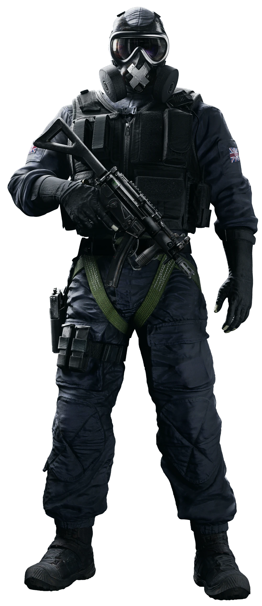

Conheça a história e o passado do Operador Mute no Rainbow Six Siege.
Mark R. Chandar "Mute" , nascido em York, Inglaterra em 11 de outubro 1991

UAT(Unidade Anti terorista) - SAS (Special Air Service)
Experiência
“Acham que tenho esse codinome por não gostar de falar. Talvez eu só não vá com a sua cara.”
Talentoso e coerente, Chandar foi um dos alunos mais jovens aceitos pela Universidade de Cambridge.
Ele se formou em eletrônica e engenharia da computação e estagiou em uma renomada empresa de tecnologia,
onde contribuiu com o design e o funcionamento de protótipos de sistemas de segurança.
Sua criatividade chamou a atenção do Escritório de Segurança Nacional do Reino Unido,
o Quartel-general de Comunicações do Governo Britânico (GCHQ).
Ao demonstrar sua perspicácia na quebra de códigos, Chandar se tornou Oficial de Inteligência
na Unidade de Inteligência e Codificação. (SIGINT). Ele continua a contribuir com a equipe de
pesquisas técnicas aplicadas e recentemente expandiu seu campo de estudo ao iniciar seus estudos de coreano.
Relatório Psicológico
Talvez não fique claro de início o motivo do codinome do Especialista Mark Chandar ser Mute. Apesar de não gostar de falar amenidades,
ele não é exatamente reservado e pode até agir impetuosamente -
característica que pode causar desgaste com alguém. Nas situações de agitação social em que ele está envolvido
há indicativos de que ele não consegue deixar isso de lado. Imagino que seja por causa de sua impaciência.
Ele precisa aceitar que há diferentes abordagens para a solução de problemas. Curiosamente,
o Especialista “Thatcher” Baker parece tolerante com relação a ele e é conhecido por se pronunciar em defesa de Chandar. […]
Chandar tende a gravitar entre diferentes personalidades. Em particular, notei que ele tem interagido com o Especialista Timur “Glaz” Glazkov recentemente.
Como o Chandar se diverte desconstruindo equipamentos para criar coisas novas, acho que tende a se identificar com pensadores abstratos e Glazkov tem um talento
similar de enxergar situações complexas de maneira única. […]
Devido à sua experiência em segurança de informações, Chandar respeita a confidencialidade e parece desconfortável ao se expressar ou diante de perguntas pessoais.
Nesse campo, bem como aqui na Rainbow, a informação é um bem vital, questão de vida ou morte. Então é claro que eu respeito isso, mas até um certo limite.
Tive que descobrir outra abordagem e chegamos a um consenso ao discutirmos História, em meio a tantos assuntos!
Para alguém tão focado em ciências, ele me surpreendeu. York, sua terra natal, é uma das cidades mais históricas da Inglaterra e é um lugar que eu adoro.
Ele descreveu com detalhes magníficos suas passagens pela igreja gótica no caminho da escola. Chandar se inclinava para trás e olhava
para a torre do sino lá no alto por tanto tempo que ficava sem equilíbrio. […] Meu encontro com Chandar me lembrou que nós, da Rainbow,
costumamos focar em como nossos agentes se destacam nos campos da ciência, tecnologia, engenharia e matemática, mas que também
valorizamos muito pessoas com paixões e interesses que abrangem um amplo espectro de estudos.
Chandar demonstra porque é muito mais que alguém que se acostumou a ser o mais inteligente da sala.
Apesar de sua idade, estou certo de que tem muito a ensinar aos outros.
-- Dr. Harishva “Harry” Pandey, Diretor da Rainbow